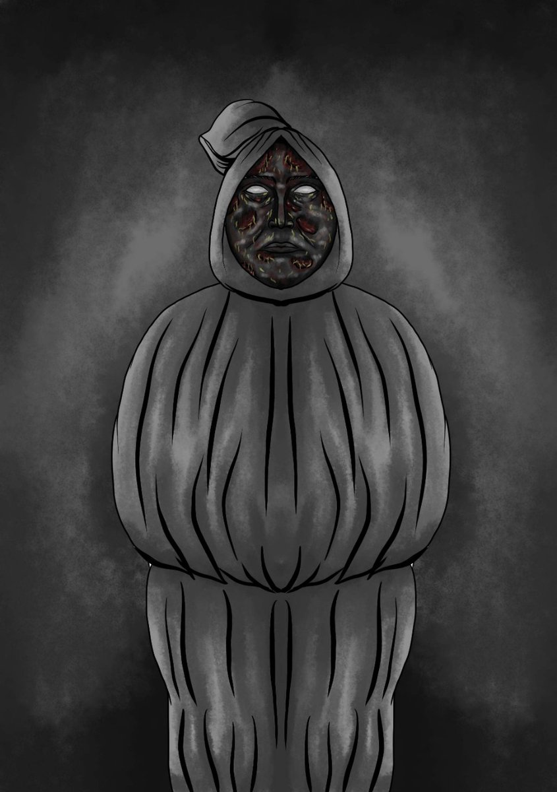
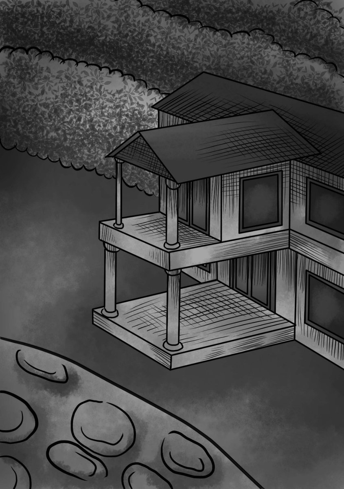
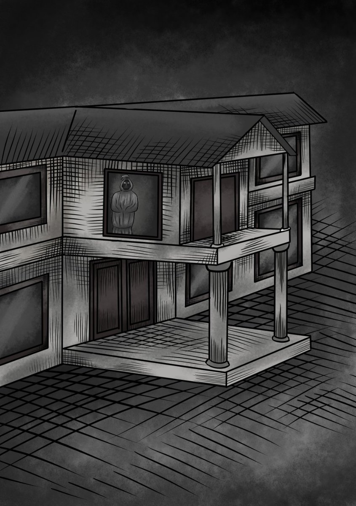
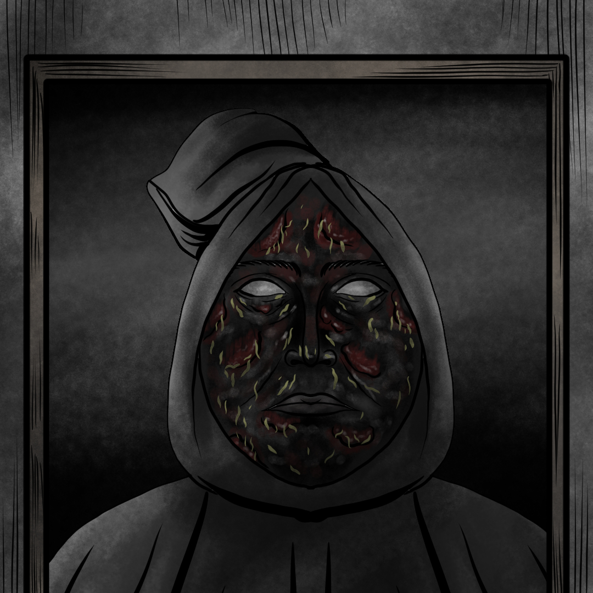

Akhirnya, hadiah dari berkunjung ke rumah seorang budayawan sepuh ini sudah bisa saya bagikan.
Kali ini tentang pocong, tapi bisa dipastikan 'bukan pocong biasa'.
Desclaimer:
Segala nama tokoh, bentuk dan detial dalam cerita telah disamarkan untuk menjaga privasi narasumber dan pihak-pihak yang terlibat dalam cerita.
Bagi kalian yang menyadari segala bentuk 'clue' dalam cerita ini, harap menyimpannya untuk diri sendiri saja.Kita mulai pelan-pelan ya
-----
Rumah Pocong Sura - Chapter 1!
"Musnahkan saya, atau kalian mati"

Perjalanan menyusuri ketinggian Bandung Selatan kala itu berbeda dari biasanya. Memasuki jalan menanjak, keelokan kebun teh di sekeliling tebing dangkal disembunyikan oleh kegelapan langit.
Bias cahaya bulan sebagai satu-satunya sumber penerangan bahkan tak mampu menembus lebatnya daun-daun pohon rimbun berakar besar nan menjalar.
Aku dan Tim hendak berkunjung ke rumah seorang budayawan sepuh untuk tujuan riset, ini kali pertama kami mengunjungi rumah beliau yang letaknya berada di sebuah desa di ketinggian Bandung Selatan.
Tentu tak bisa kusebutkan secara spesifik lokasinya, namun kalian yang tinggal di sekitar Bandung, pasti tak asing dengan tempat yang terletak di antara hamparan kebun teh dan hutan-hutan yang terbilang masih perawan—
tempat ini juga dikenal memiliki histori sejarah yang berkaitan dengan era Kolonial Belanda di tanah pasundan.
Selain karena budaya penghormatan leluhur yang masih dipertahankan, lokasi desa yang berada di tengah-tengah alas yang jauh dari hiruk pikuk keramaian kota menjadikan tempat ini begitu eksotis kala siang, namun diselimuti misteri ketika malam menjemput.
Sensasinya berbeda—kala malam, tempat ini tetap eksis dengan ‘kehidupan lain’ yang bahkan bisa dibilang lebih ramai dari kehidupan manusia bernyawa kala matahari bersinar.
Tak ada bunyi selain suara serangga yang terdengar nyaring. Senyap pun semakin terasa ketika hawa dingin seketika membekap bersama kabut yang turun menghalangi jarak pandang. Kami berhenti di batas masuk gapura desa.
Walaupun sudah dekat dengan tempat yang dituju, namun kami tidak ingin mengambil resiko, tebalnya kabut cukup membahayakan apabila tetap melanjutkan perjalanan, terlebih tak satu pun dari kami mengetahui medan jalan.
Mobil terparkir menepi, aku dan eza turun untuk membakar sebatang rokok. Sepanjang mata memandang terlihat hamparan kebun teh menurun namun diantara kabut samar-samar tertangkap satu objek yang menarik mata—
sebuah rumah tua yang menjadi satu-satunya bangunan berdiri di tengah-tengah kebun. Aku menduga itu adalah rumah kosong karena tak ada satu pun lampu yang menyala.

Namun dari balik jendela-jendela besarnya aku seperti melihat satu sosok tengah berdiri menatap ke arah kami. Rasa penasaran tanpa sadar memaksa mata untuk fokus memperhatikan lebih tajam—
--kabut seketika bias, bersama dengan itu aku melihat sosok besar berbalut kain putih berkuncup (Pocong) yang menatap ke arah kami dari balik jendela.

semakin diperhatikan, rupanya kian jelas--pocong berkulit hitam legam sedang menyorot tajam pada kami

Mereka sudah bisa menebak apa maksud dari raut wajahku yang seketika berubah. Kami pun segera memacu mobil menuju tempat yang kami tuju. Sosok budayawan sepuh yang dipanggil Aki itu sudah berdiri menanti di teras rumah
Kami bersalaman, kemudian dipersilahkan masuk. Aku merasa gusar, ingatan mengenai sosok pocong yang baru saja kulihat begitu menggangguku,
“Kamu kenapa?” tanya Aki.
“Tadi, saya melihat pocong ki.”
Semua orang terkejut mendengarnya, tapi aki malah tersenyum,
“Pasti di rumah pocong, ya? orang-orang di sini udah pada tau” ucap aki
“dulu orangnya ngilmu, pesugihan juga. Terus dia meninggal tapi hidup lagi. Orang-orang taunya dia mati suri, padahal yang hidup lagi itu pocongnya. Awalnya nggak ada yang tau, termasuk keluarganya yang tinggal serumah--”
Aki membuka cerita yang entah mengapa membuatku tertarik, malam itu kami mendengar kisah “Rumah Pocong Hitam” yang ternyata telah melegenda di wilayah ini dan tak hanya dari Aki,
Besok harinya, kami mendapat kesaksian dari narasumber yang mana merupakan tukang kebun dan bekas penjaga rumah tersebut.
Sebut saja, namanya, Pak Sarno
---- Bersambung--
Buat kalian yang mau baca duluan, bisa download versi E-book + sudah dilengkapi dengan ilustrasi berdasarkan kejadian yg terekam, tentunya dgn cerita yg lebih rinci.
Cek Spoiler di bawah,
Download E-Book dengan mengklik gambar dibawah ini:
Matchapics © 2022